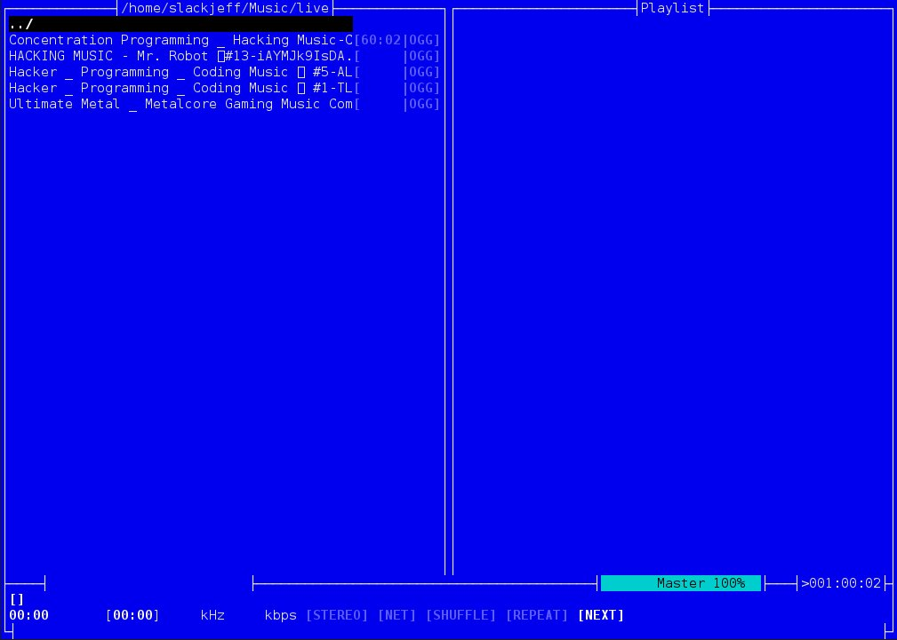
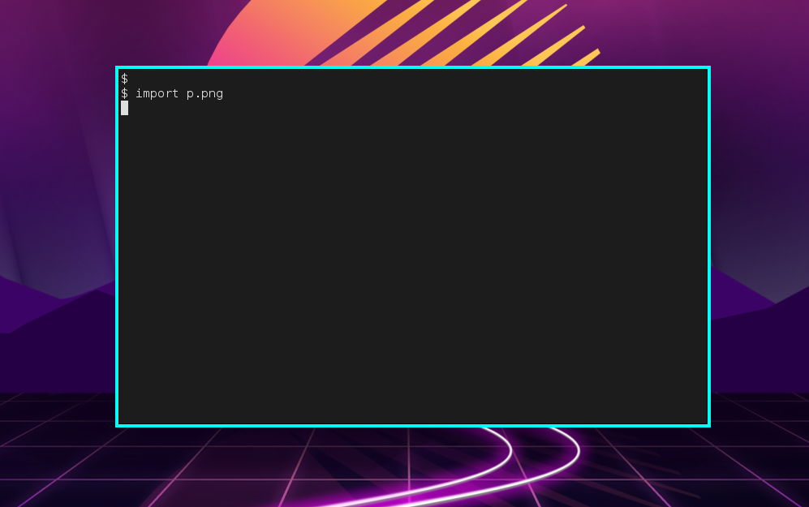
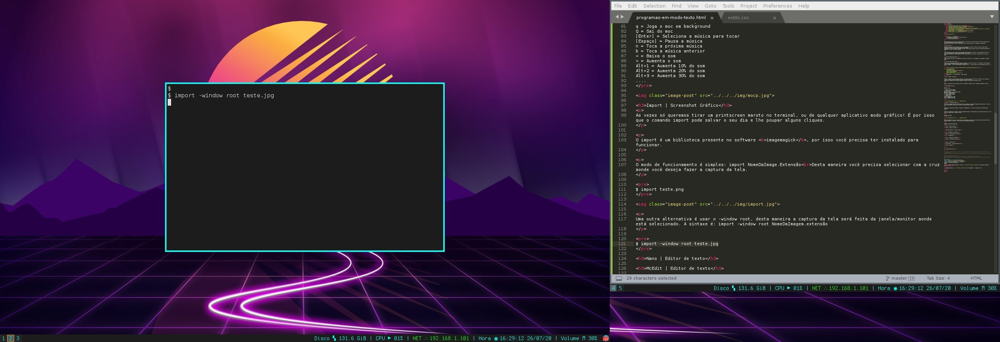
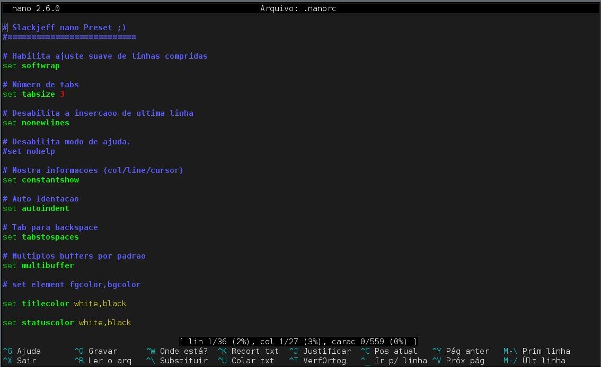

Programas de modo texto para o seu dia dia
Todos aplicativos que usamos via interface gráfica, ou seja que você executa em seu kde, xfce, cinammon, mate existe uma alternativa que roda em modo texto.
Claro que muitos sysadmins já estão acostumados a viver no terminal e conhecem o poder que os aplicativos em modo texto possuem! Mas se você não está habituado listamos abaixo algumas vantagens.
Foco total
Aplicativos gráfico atuais normalmente tem vários objetivos e um deles é focado no design, tentam deixar a experiência do usuário o mais único possivel. Neste caminho normalmente o foco do aplicativo/software é perdido! Vários botões, imagens e outras coisas desnecessárias são mostradas. Com isso o seu foco é perdido.
Já aplicativos que rodam em modo texto normalmente são minimalistas, simples e é uma brincadeira em texto! Ou seja, sem distração aqui. Também vários aplicativos que rodam via CLI tem um design por trás espelhado no UNIX*. Faça uma coisa e muito bem. Normalmente você tem um foco maior...
Gráfico? Normalmente direto.
Existe gráfico via CLI? Sim! Normalmente são criados com caixas UI. O seu computador vai trabalhar com folêgo total.
Te torna mais du(rão|rona)
A sua sede por substituir aplicativos de modo gráfico por modo texto será maior. Por exemplo eu, hoje substitui quase todos meus aplicativos de modo gráfico, só algumas que não consegui... Como o browser/editor de imagens e video... Mas fique pasmo, existe alternativas para eles :)
Moc | Player de música
O Music on console ou mais conhecido como moc, é um player de música muito leve e intuitivo! Ele é baseado em ncurses, ou seja, possui uma interface em modo texto bem intuitiva. Conheci ele a alguns anos e tenho que admitir que passou a ser meu player padrão no Linux.
O moc é um completo player de música via cli, sua sintaxe é simples e fácil! Totalmente orientado a teclas.
Comandinhos do moc
Execução: mocp ? = Mostra o menu de ajuda q = Joga o moc em background Q = Sai do moc [Enter] = Seleciona a música para tocar [Espaço] = Pausa a música n = Toca a próxima música b = Toca a música anterior < = Baixa o som > = Aumenta o som Alt+1 = Aumenta 10% do som Alt+2 = Aumenta 20% do som Alt+3 = Aumenta 30% do som ....
Import | Screenshot Gráfico
As vezes só queremos tirar um printscreen maroto no terminal, ou de qualquer aplicativo modo gráfico! É por isso que o comando import pode salvar o seu dia e lhe poupar alguns cliques.
O import é um biblioteca presente no software imagemagick, por isso você precisa ter instalado para funcionar.
O modo de funcionamento é simples: import NomeDaImage.Extensão
Desta maneira você precisa selecionar com a cruz aonde você deseja fazer a captura da tela.
$ import teste.png
Uma outra alternativa é usar o -window root, desta maneira a captura da tela será feita da janela/monitor aonde está selecionado. A sintaxe é: import -window root NomeDaImagem.extensão
$ import -window root teste.jpg
Perceba que como possuo dois monitores, foi capturado os dois!
Nano | Editor de texto
Este é o editor mais fácil e para iniciantes em modo texto que você vai achar! Fizemos uma máteria aqui no Linux MACHINE, falando sobre como ele pode se tornar o editor de texto padrão em distribuições voltadas para desktop.
Ele emula o antigo editor pico, porém é bem mais potente e completo! Por ser orientado a teclas é um patro cheio para os iniciantes... Para programadores ele possui syntax highlighting e suporte a várias linguagens de programação.
Execução: nano arquivo(s) ^ = Ctrl M = Alt ^ + g = Abre o menu de ajuda ^ + O = Salva o arquivo ^ + x = Salva/Sai do arquivo ^ + k = Recorta/copia ^ + u = Cola
Existe um curso completo do editor nano por um valor atrativo. Confira!